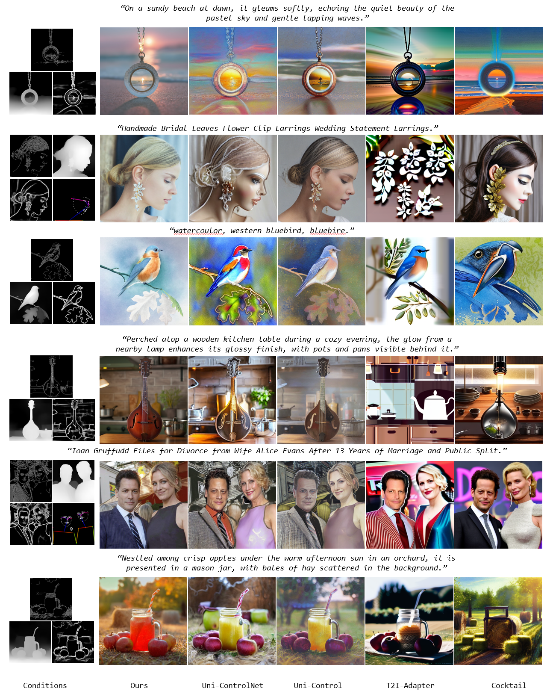

Comparison with Other Methods



Recent advances in diffusion-based text-to-image generation have demonstrated promising results through visual condition control. However, existing ControlNet-like methods struggle with compositional visual conditioning - simultaneously preserving semantic fidelity across multiple heterogeneous control signals while maintaining high visual quality, where they employ separate control branches that often introduce conflicting guidance during the denoising process, leading to structural distortions and artifacts in generated images. To address this issue, we present PixelPonder, a novel unified control framework, which allows for effective control of multiple visual conditions under a single control structure. Specifically, we design a patch-level adaptive condition selection mechanism that dynamically prioritizes spatially relevant control signals at the sub-region level, enabling precise local guidance without global interference. Additionally, a time-aware control injection scheme is deployed to modulate condition influence according to denoising timesteps, progressively transitioning from structural preservation to texture refinement and fully utilizing the control information from different categories to promote more harmonious image generation. Extensive experiments demonstrate that PixelPonder surpasses previous methods across different benchmark datasets, showing superior improvement in spatial alignment accuracy while maintaining high textual semantic consistency.
@article{he2024dynamiccontrol,
title={DynamicControl: Adaptive Condition Selection for Improved Text-to-Image Generation},
author={He, Qingdong and Peng, Jinlong and Xu, Pengcheng and Jiang, Boyuan and Hu, Xiaobin and Luo, Donghao and Liu, Yong and Wang, Yabiao and Wang, Chengjie and Li, Xiangtai and Zhang, Jiangning},
journal={arXiv preprint arXiv:2412.03255},
year={2024}
}